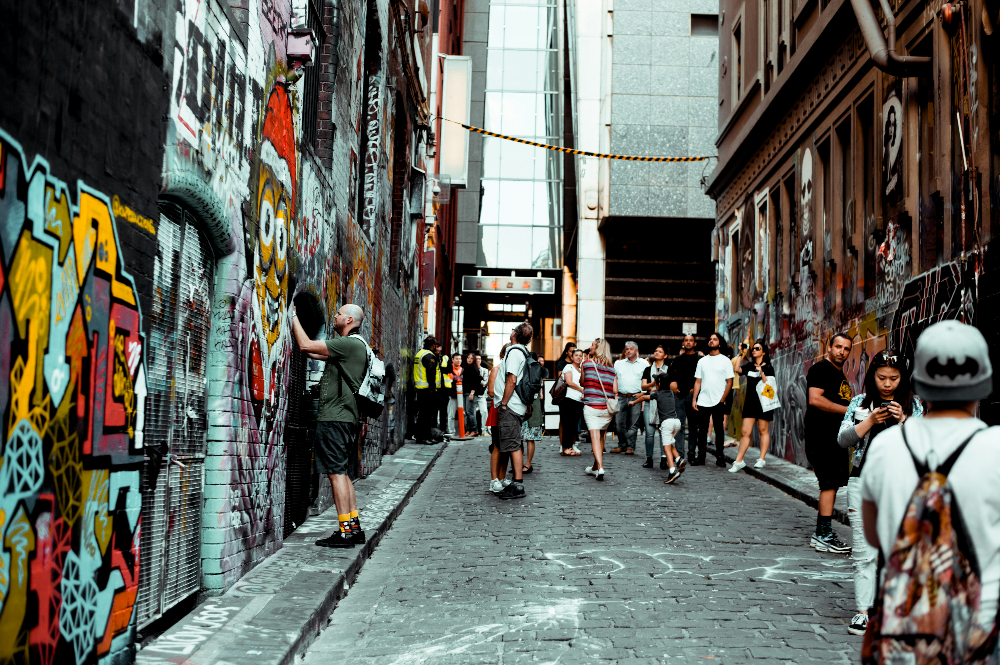
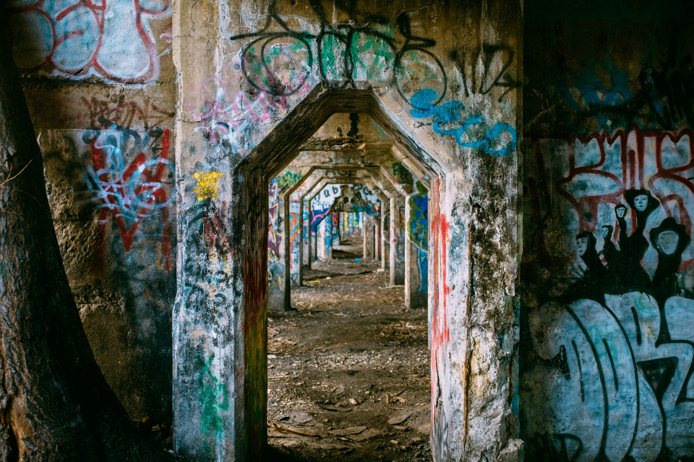
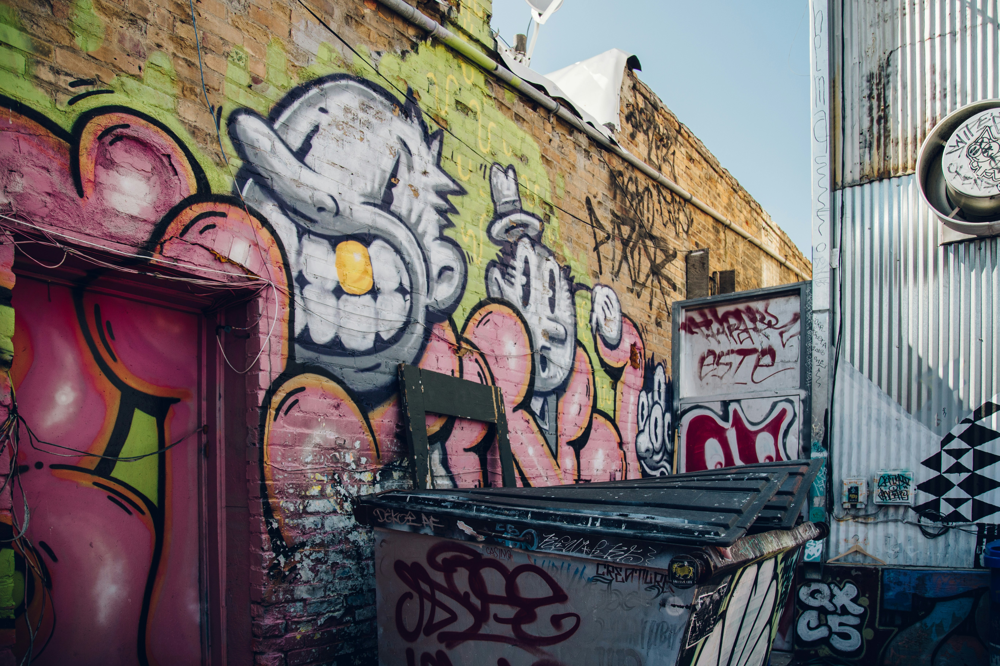
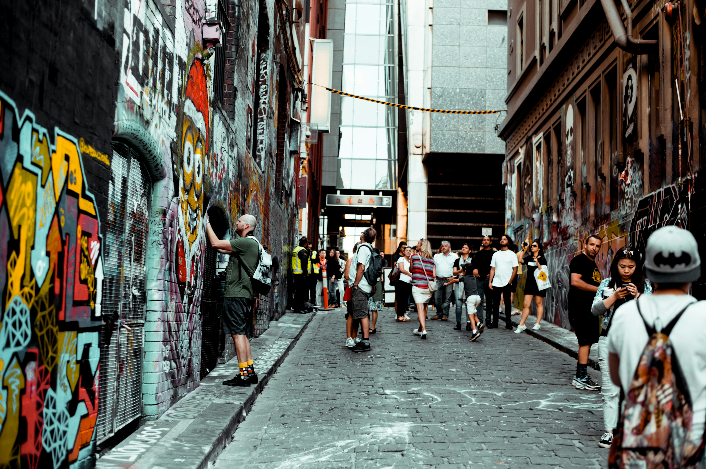
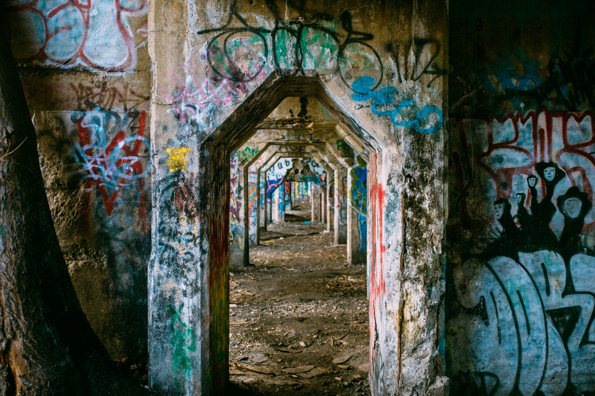
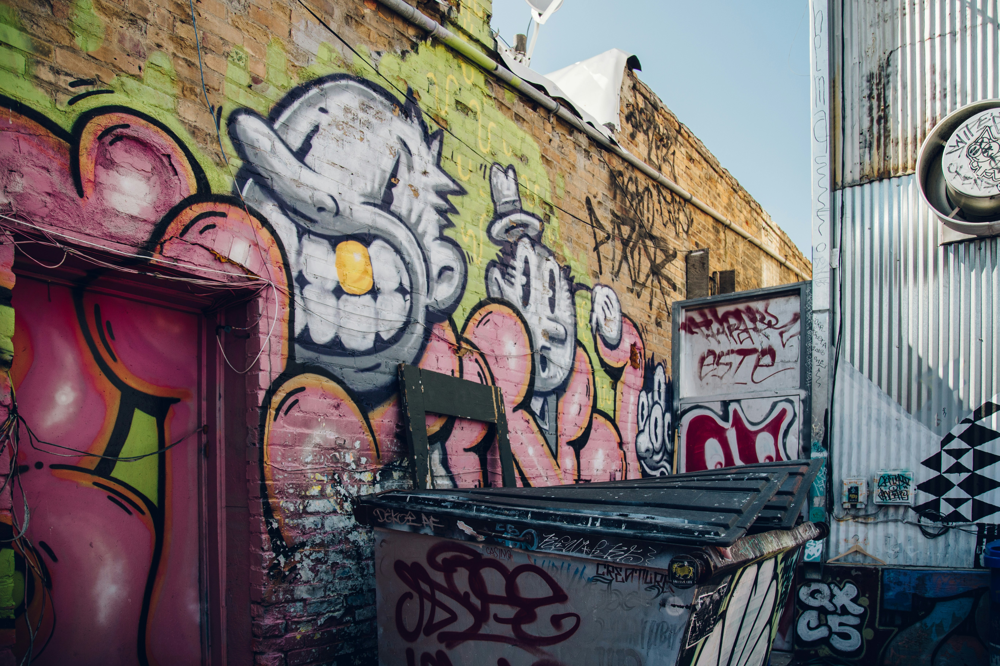
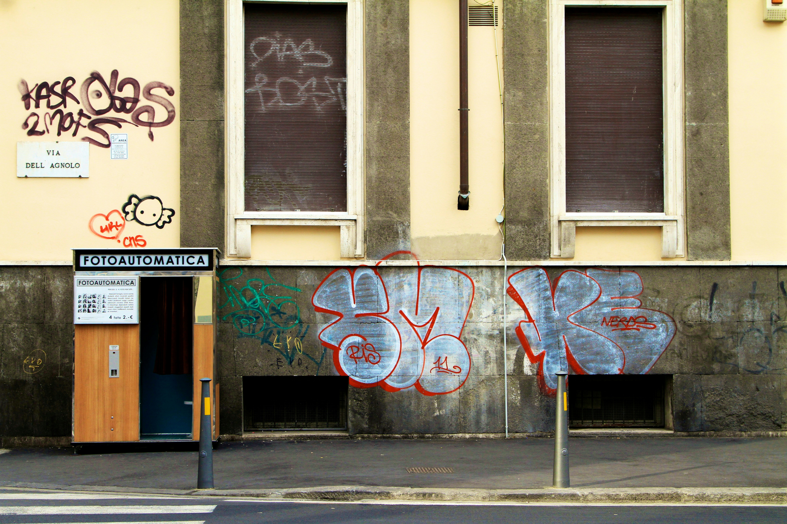
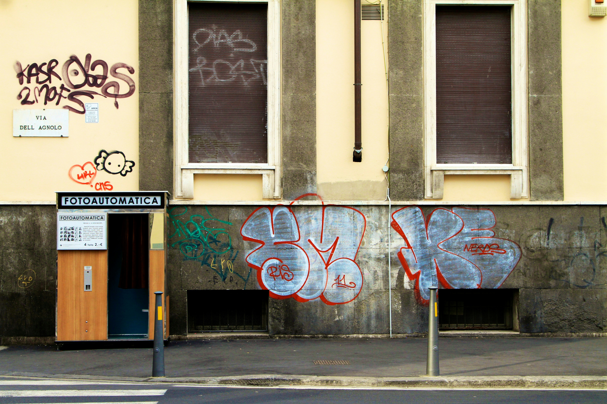
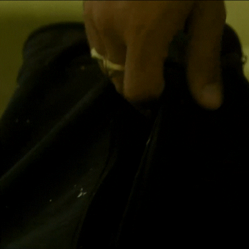

 

Las calles hablan: el arte urbano como voz colectiva
El arte urbano o street art es una expresión visual que ocurre en espacios públicos mediante murales, grafitis, esténciles, pegatinas, mosaicos o instalaciones efímeras. Aunque históricamente fue visto como vandalismo, actualmente se reconoce como una forma estética y política legítima, especialmente cuando facilita la participación comunitaria o es comisionado con fines culturales.
Hoy en día, el arte urbano se reconoce por su capacidad para transformar espacios, narrar historias colectivas y hacer visible lo oculto en el entorno urbano.
Su color cuestiona el orden
que otros llaman progreso

Contacto
UrbanColors, Colectivo de Arte Urbano.
Calle Murales Vivos #45-21
P: +57 (1) 456-7890 Correo electrónico
contacto@urbancolors.co
Calle Murales Vivos #45-21
P: +57 (1) 456-7890 Correo electrónico
contacto@urbancolors.co
2025 © AU. UrbanColors.